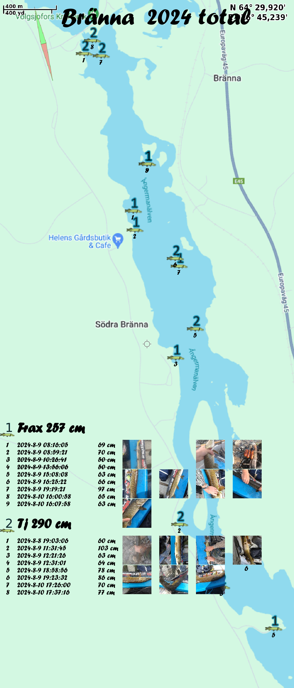
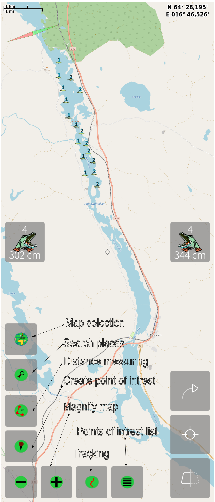

Pike fishing App. For 1-3 competing anglers
To Start press New and then enter settings symbol
- The number of anglers
- The Team name of the anglers
- The name of fishing event or lake
To enter a catch
- Double click the pike representing the angler
- Adjust the length
- Document by taking a photo
- Close by swiping left or right
To Make a report
- Adjust the map to a sutible size and position
- Swipe down the pull down menu select Make Report
- Share the report
- Sample report with the winner TJ. With the 4 largest counted (under 60 not counted)

Map controls

There is also an option where you can export a sea chart for printout in the settings page "Save Map View"